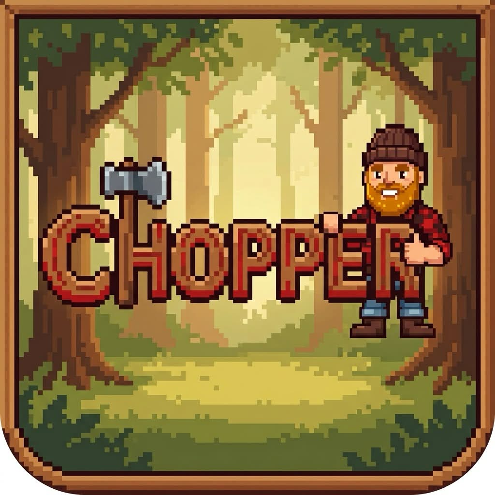

Worlds by seed
Each world has its own hills, ponds, forests and crypts. Share a seed to explore the same map.

Co-op survival
Chop wood by day. Defend your home at night. Explore four forests and their crypts with up to three friends.

Start beside a ruined hut with up to three friends. Repair it, gather supplies and explore the four forests. Trees you cut grow back, and come after you at night. Stay close to home and the night stays quiet.


Each world has its own hills, ponds, forests and crypts. Share a seed to explore the same map.
Trees fall away from your last hit, or downhill. Stand clear.
Explore Water, Earth, Fire and Wind. Defeat an elemental enemy to charge your axe for 15 hits.
Tree creatures hunt in packs. Block, parry, dodge and counter.


Craft tools, armor and crypt gear at the workbench. The chest is shared. If everyone sleeps, morning comes.
Build floors, walls, roofs, stairs, torches and campfires near a workbench. Night creatures can damage your build.


Find three crypts in each world. Fight elemental draugr and search for crypt iron and rune shards. Use them to make sturdy gear and add runes to your axe.
Fight through the vault to reach the boss. Defeat it for elemental essence and craft a ward against its attacks.

Fish in ponds, marshes, lakes and the sea. Twitch the lure to draw fish in, then reel when the float dips. Weather and time affect your catch. Fish make filling meals.
Each forest also hides a mine. Strike a vein as it glints for ore, gems and fossils.
Host a world and share its six-character code, or invite Steam friends in-game. No port forwarding. Each player keeps their gear, and the host's world saves at dawn.
In early playtesting on Windows, with Linux and macOS builds in testing. A free Steam demo is planned.